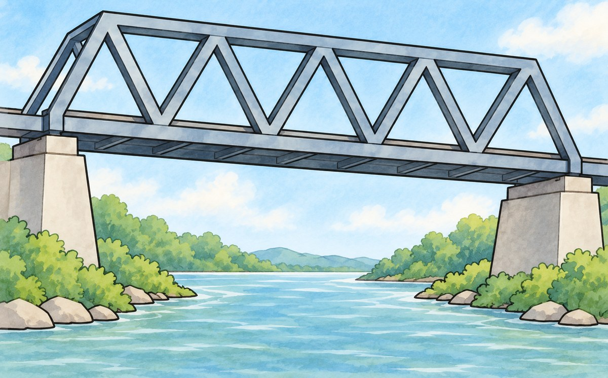
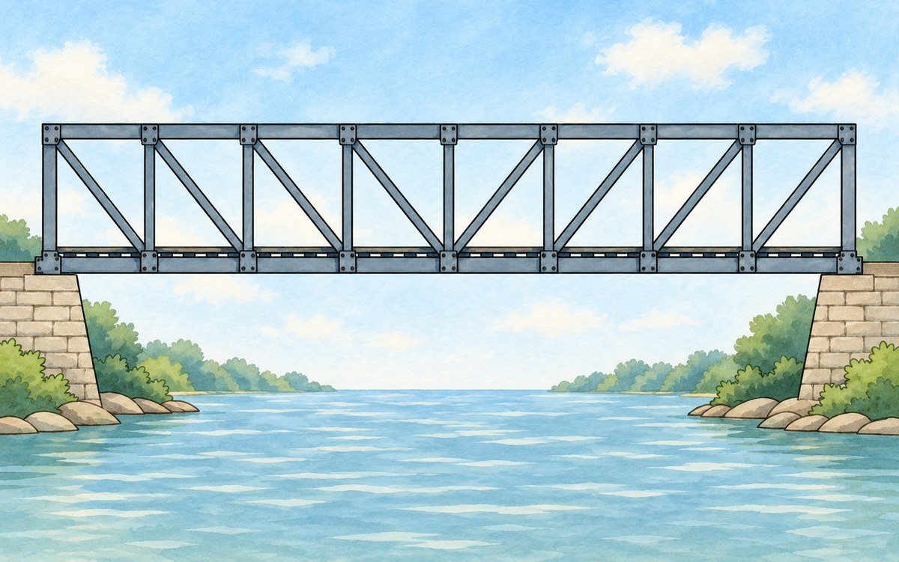
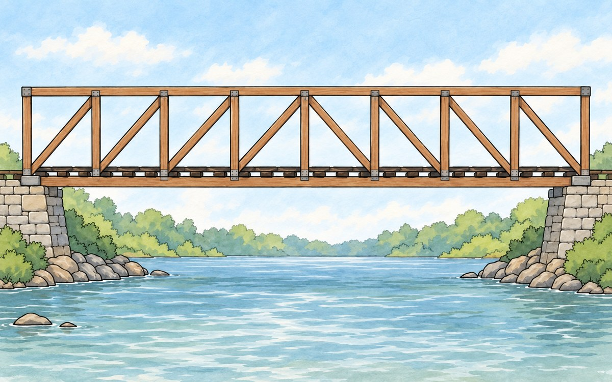
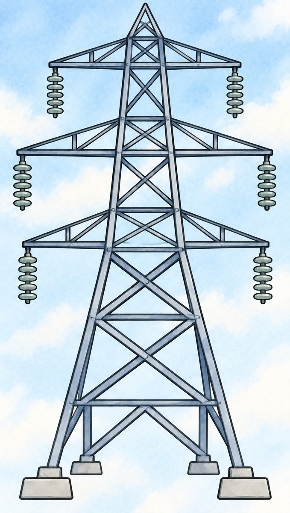

1차시 · 기본 구조 제작
오늘은 기본 구조 V1을 완성한다
- 트러스 소개·조건·역할 확인 5분
- 모둠별 구조물 제작 35분
- 촬영·웹앱 입력·도면 정리 10분
역할은 나누어도, 학습지에는 각자 기록한다.
왼쪽 아래 시계를 눌러 시작·멈춤. ↺를 누르면 다시 맞춤.
1차시 · 트러스 소개
변의 길이가 정해지면 모양도 정해질까?
트러스는 곧은 막대의 끝을 이음점에서 이어,
삼각형을 이어 붙여 만든 구조이다.
삼각형은 모양이 정해지지만(SSS 합동), 사각형은 모양이 바뀐다.
1차시 · 트러스 소개
네 가지 트러스 모양
| 종류 | 모양 | 특징 | 쓰이는 곳 |
|---|
| 와렌 | | 정삼각형을 위아래로
번갈아 잇는다. |  철교·크레인 팔 |
| 프랫 | | 대각선이 가운데 쪽으로
내려간다. |  철교 |
| 하우 | | 프랫과 대각선 방향이
반대이다. |  다리 |
X자
더블 와렌 | | 대각선 두 개가
X자로 교차한다. |  송전탑 |
1차시 · 제작 조건
완성한 뒤 학습지에 확인 표시한다
- 길이 $18\,\mathrm{cm}$인 빨대와 나누어 준 연결 재료만 쓴다.
- 다리의 길이(아래쪽 막대 전체)는 $38\,\mathrm{cm}$ 이상이다.
- 다리의 폭(두 측면 트러스 사이)은 $5\,\mathrm{cm}$ 이상이다.
- 다리의 높이(아래쪽에서 위쪽 막대까지)는 $7\,\mathrm{cm}$ 이상이다.
- $30\,\mathrm{cm}$ 떨어진 두 책상에 걸친다.
양 끝의 아래쪽 이음점을 책상 위 받침 조각에 올린다.
- 윗면이 평평하여 하중을 가하는 판을 올릴 수 있다.
- 칸은 정삼각형·직각이등변삼각형·정사각형으로 만든다.
- 두 측면 트러스는 같은 모양으로 만든다.
1차시 · 칸의 모양과 재료
한 측면 트러스 안에서는 한 계열로 만든다
정삼각형 칸과 나머지 두 모양의 칸은 섞지 않는다.
아래쪽 직선의 내부 이음점에서 빈틈없이 모인 칸들의 각의 합은 $180^\circ$이다.
칸 수·기본 막대 길이
교사 안내: ______
연결 재료·지급 수량
교사 안내: ______
허용 수정·테이프 규칙
교사 안내: ______
양 끝의 받침 조각
교사 안내: ______
판·받침 조각·추
교사 안내: ______
하중 도구·증가·중단 기준
교사 안내: ______
1차시 · 다리와 판의 구조
판 위 추의 무게는 두 트러스가 절반씩
같은 모양의 측면 트러스 두 개 위에 판을 올린다.
1차시 · 한쪽 트러스를 해석한다
다리 끝에서 본 모습과 옆에서 본 모습
다리 끝에서 보면
판이 두 트러스에
추의 무게를 절반씩 전달한다.
옆에서 보면
위쪽 이음점마다 같은 하중.
V1 그림은 이 방향에서 그린다.
오른쪽은 정삼각형 3칸의 예이다. 다른 종류도 같은 방향에서 그린다.
1차시 · 모둠 제작
역할을 나누어 V1 제작하기
- 모둠이 고른 트러스 종류와 조원을 기록한다.
- 각자 맡을 작업의 대상과 범위를 정한다.
- 두 측면 트러스를 같은 모양으로 만든다.
- 제작 조건 화면으로 돌아가 하나씩 확인한다.
내가 실제로 만든 부분과 한 일을 순서대로 기록한다.
AI는 교사가 제공한 구조해석 웹앱만 사용한다.
1차시 · V1 기록과 확인
사진·웹앱 입력·도면을 서로 맞춘다
- 모둠에서 한 번 촬영하고 웹앱에 구조를 입력한다.
- 사진에서 읽은 구조를 실제 구조·V1 그림과 대조한다.
- 각자 V1을 옆모습으로 그리고 필요한 표시를 한다.
이음점 이름 · 칸의 모양 · 막대 길이($\mathrm{cm}$)
받침 위치 · 위쪽 이음점(판이 누르는 곳)
이음점 이름은 모둠 안에서 통일한다. 웹앱 접속 · 교사 안내: ______
1차시 · 마무리와 다음 단계
기록을 마무리하고 제출한다
- 조원과 트러스 종류
- 표시가 빠짐없이 들어간 V1 구조 그림
- 고른 구조의 이유와 제작에서 신경 쓴 점
- 4번: 내가 맡아 완성한 범위와 실제로 한 일의 순서
해석지 조기 시작은 구조가 승인된 모둠만.
해석지를 받으면 구조를 고정한다.
구조를 고치면 다시 입력·승인받는다. 수업 끝에 학습지를 제출한다.